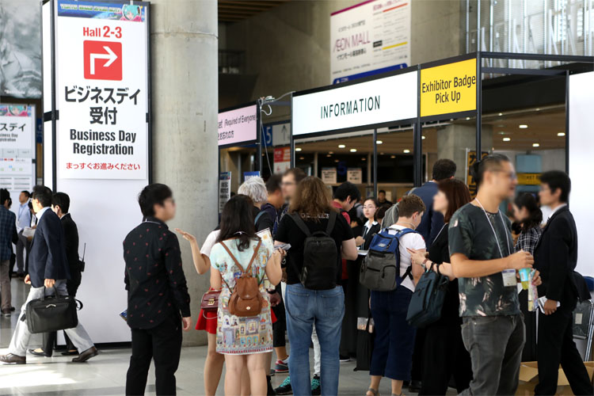
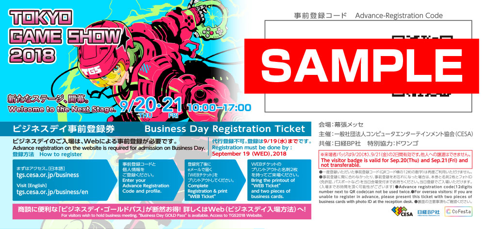
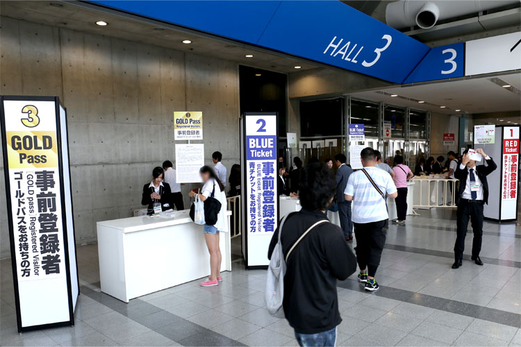
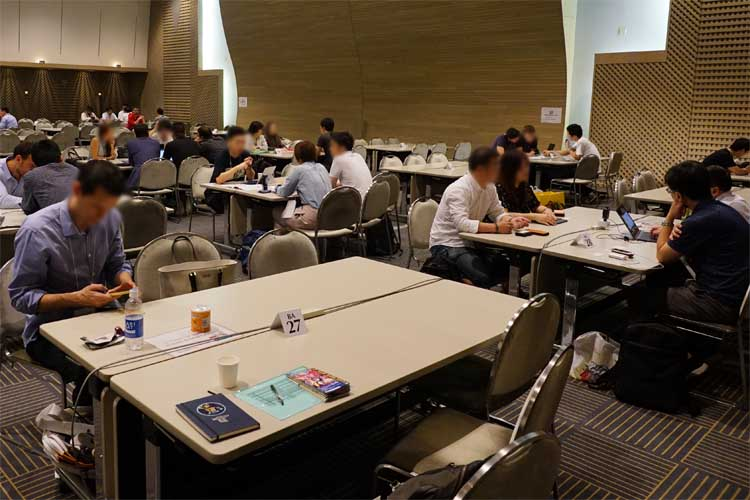

The first visit to TGS -Business Day Version-
初めてのTGS
～ビジネスデイ編～TGSに初めて参加される方へ 写真でわかるTGSの歩き方
入場に関連して知っておきたいこと
ビジネスデイに入場できる方の条件
ビジネスデイの9月20日（木）・21日（金）は、ゲームビジネス関係者（ゲーム関連企業にお勤めの方、ゲーム関連のお仕事に従事されている方、ゲーム関連企業とのビジネスを検討している方、流通関係者など）のみご入場いただけます。
ご来場者にあたり、「事前登録」をお願いしております。Webフォームに、ゲーム関連のお仕事をされていることを証明する個人情報などを登録していただき、東京ゲームショウ事務局による審査を通過した方のみが入場可能になります。18歳未満の方、学生の方、ゲームビジネス関係者以外の方は、入場できません。
- 

詳しくは、ビジネスデイ＜9/20（木）・21（金）＞の入場方法 をご参照ください。
事前登録を済ませた方の入場方法
ビジネスデイは、海浜幕張駅などから会場への誘導はありません。初めての方は会場への行き方を事前にご確認ください。
アクセスガイドはコチラ
入場受付は、午前8時から始まります。受付の場所は、2階中央モール2ホール前を予定しています。受付でご本人確認を済ませてから、バッジホルダーを受け取り、入場待機列に並んでいただきます。
受付にあたっては、事前登録完了メールに添付されている「QRコード入りWEBチケット（A4サイズ）」のプリントアウト、「顔写真入り本人確認証」、「名刺」が必要になります。お手元にご用意の上、受け付けしてください。


-
当日、「QRコード入りWEBチケット（A4サイズ）」のプリントアウトをお忘れになった方は、受付の前に、会場に設置しますプリントアウト専用カウンターにて出力をお願いします。 スタッフに、事前登録の際に入力いただいた「会社名」「氏名」をお伝えください。お待たせする場合がございますので、できるだけ、事前にプリントアウトしてご持参ください。

なお、受付にあたっては出展企業が関係者に配布している、「ビジネスデイ事前登録券」をお持ちいただくだけでは入場できません（登録が必要です）。事前登録をしていない方は、会場にて、当日登録をお願いしています。登録にお時間がかかる場合がありますので、できるだけ、事前登録を済ませてからご来場ください。
※「ビジネスデイ事前登録券」によるWeb事前登録は9月19日（水）23:59までです。



TGSフォーラムの「基調講演」「グローバル・ゲーム・ビジネス・サミット」や「専門セッション」（無料）にお申し込みの方
TGSフォーラムの「基調講演」「グローバル・ゲーム・ビジネス・サミット」および「専門セッション」は、東京ゲームショウのビジネスデイ事前申込者のみが参加できます。お申し込みの方は、最初に東京ゲームショウの入場受付を済ませて下さい。 受付の場所は、2階中央モールの2ホール前を予定しています。受付に時間がかかる場合がございますので、時間に余裕をもってお越しください。東京ゲームショウの受付後、各講演・セッションの受付にお進みください。
「ビジネスデイ・ゴールドパス」（有料）にお申し込みの方の入場方法
-
「ビジネスデイ・ゴールドパス」（有料）にお申し込みの方の受付は、2カ所を予定しています。 1つは、一般のビジネスデイ来場者と同じ２階中央モールの2ホール前。もう1つは、「ビジネスラウンジ」がある国際会議場２階のロビーです。
受付にあたっては、申込完了メールに添付されている「QRコード入りWEBチケット（A4サイズ）」のプリントアウト、「顔写真入り本人確認証」、「名刺」が必要になります。お手元にご用意の上、受け付けしてください。 - 
当日、申込完了メールに添付されている「QRコード入りWEBチケット（A4サイズ）」のプリントアウトをお忘れになった方は、受付の前に、会場に設置しますプリントアウト専用カウンターにて出力をお願いします。 スタッフに、事前登録の際に入力いただいた「会社名」、「氏名」をお伝えください。
お待たせする場合がございますので、できるだけ、事前にプリントアウトしてご持参ください。
-
受付後、「ビジネスラウンジ」をご利用いただけます。商談の相手が、東京ゲームショウの受け付けをしていなくても、ご同行いただければ、「ビジネスラウンジ」内でミーティングができますので、お待ち合わせの上、ご利用ください。
- 